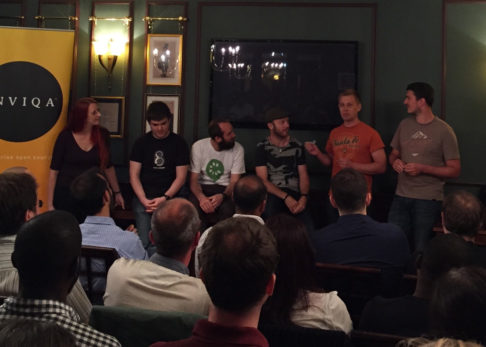
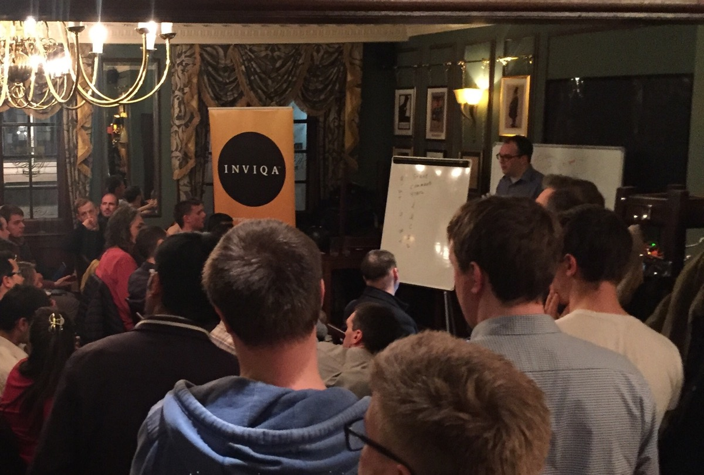

BDD London is back!
Starting February 20th BDD London will happen every second month. Lock your calendars:
- Monday, Feb 20
- Tuesday, Apr 18
- Wed, June 29
- Wed, Aug 16
- Wed, Oct 11
- Wed, Dec 20
You might notice couple of things changed, like our shiny new logo, shiny new website or our shiny new venue in the form of SkillsMatter CodeNode.
{kind=link}
What you wouldn’t immediately notice are the under-the-hood changes of the format itself. BDD London started as Behat London - a meeting of Behat users. Fairly quickly we found that the interest of the community was spanning far outside of that cozy single-tool box. We now feel the same in regards to the format of our meetings.
One of the best meet ups in the last two years were practical events with high levels of collaboration. So we’re now committing to bring more focus on practical and collaborative exercises as part of our meetings. After all, BDD is all about collaboration, isn’t it? We want to create a space for us to think about and discuss the challenges we face.
February 20th
In the spirit of our newly found commitment, we’re doing something fairly different for the first meet up this year.
First, we’ll start with a quick open-forum discussion that would focus on immediate, real challenges attendees have in regards to breaking collaborative silos. Konstantin, Ciaran and, hopefully, other BDD thinkers will provide their expertise and brain in a clear strive to fight collaboration challenges collaboratively.
Second, Konstantin and Ciaran will facilitate their Modelling by Example workshop on exploring and defining Ubiquitous Language that should support your conversation in examples. Konstantin and Ciaran already delivered this workshop at multiple conferences to a great acclaim, so don’t lose this opportunity to experience it for free, surrounded by fellow London practitioners.
Thirdly, we would love if some of you propose some lightning talks to spread between sessions. We are very committed to grow this community by helping you to spread the word. So here’s our CFP page.
April 18th
Following our calling for more practical, participatory events, we are extremely happy to announce that we have another cool BDD workshop lined up for April. John Ferguson Smart of BDD In Action fame will facilitate his new Feature Mapping workshop. Needless to say, we're very excited to both greet John again at BDDLdn and to learn more from him.
Feature Mapping – The Fast Track from Stories to Executable Specs
Writing good acceptance criteria is one of the keys to effective software delivery. But it’s hard. In this workshop, you will learn about Feature Mapping, a new technique and easy that can help teams write higher quality acceptance criteria more easily. Feature Mapping is an excellent way to build a deep shared understanding of a story's requirements and clear a path to a smooth implementation of automated acceptance tests.
June 29th
After her great talk for us in 2016, we're extremely happy to welcome Jenny Martin back for a more interactive look at OOPSI Mapping
OOPSI Mapping
OOPSI Mapping is a collaborative agile analysis and testing technique. It’s a mash up of Chris Matt’s Feature Injection and Matt Wynne’s Example Mapping. OOPSI is an outside-in process, standing for Outcome, Output, Process, Scenarios, Inputs. It gives our discovery activities some structure and helps us expertly navigate the quickest path to value. The OOPSI technique also helps us see the big picture and avoid user story hell. It joins up nicely with Impact Mapping, Story Mapping and Event Storming.
If you do it the other way round it ISPOO
In this highly participative hands-on workshop you’ll work through a case study using specification by example and BDD. We’ll examine the potential pitfalls and challenges of those approaches and then see if the OOPSI approach helps us navigate through them with greater confidence
August 18th
We're very pleased to welcome two Mikes to share their experiences with us!
Data Personas - Mike Scott
Data personas are a way of giving meaningful and memorable names to sets of data used in scenarios. They build on the ideas of personas and contribute to the ubiquitous language. Using data personas allows you to have conversations in a more natural language, for example 'when the user buys a standard luxury car but with the sports pack'.
In this short talk Mike will introduce the ideas and show practical examples of how data personas can be used.
Impact Mapping in Action - Mike Body
Impact Mapping is an analysis and planning technique that helps identify the factors that can either work towards or against the achievement of a goal and produces a visual representation of them. The technique is a collaborative process that involves exploring who can have an 'impact' (either positive or negative) on achieving a business goal and what we can do to achieve that impact technically or not technically.
Mike has been using this technique in many analysis and planning sessions. It's a great way of finding different routes to achieving goals which aren't always apparent until you start collaborating and working through the process